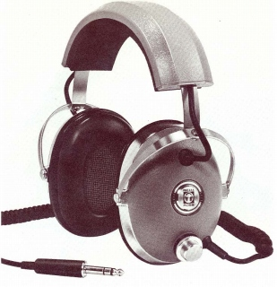
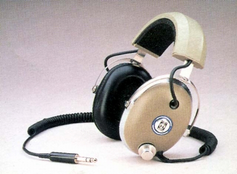
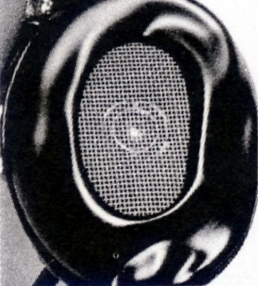
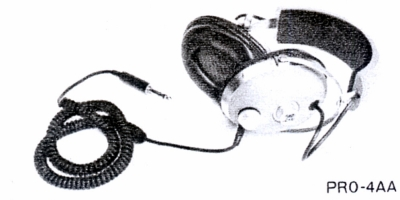

PRO/4AA




■価格 21,500円
■型式 ダイナミック型
■振動板 50�oポリエステルエレメント
■インピーダンス
■再生周波数帯域 10-20,000Hz
■許容入力
■感度
■コード 3mカール
■重量 539g（コード含まず）
■発売 1972年頃
■販売終了
■備考 歪率1％以下（95dB-SPL)
上記は発売時期を除き、テクニカ扱いの1975年のデータ
詳細は不明だが1972年頃、成川商会が扱っていたようだ。
当時の記録では
■価格 24,000円
■重量
500g
となっている。
またイヤパッドは、中空構造ではなく、液体充填タイプだったらしい。
液体充填タイプのイヤパッドは1960年代のESP/6（ESP/6Aのオリジナルタイプ）で
使われていた記録がある。
（1977年のコス日本法人時代）
■価格 22,000円
■インピーダンス 230Ω
■再生周波数帯域 10-22,000Hz
■感度 100ｄB/0.95V 正弦波
■重量 580g（コード含まず）
（1979年のサンスイ時代）
■価格 18,000円
サンスイが代理店時代には80年代にカタログから消えていた時期がある。
（1997年のティアック時代）
■価格 23,000円
■感度 100ｄB/0.3VRMS
■重量 400g（コード含まず）
（2008年のティアック時代）
■インピーダンス 250Ω
■再生周波数帯域 10-25,000Hz
■感度 95ｄB/mW
■重量 596g